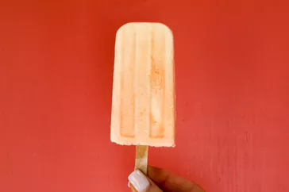

Simple Homemade Dreamsicles

Description
Light, creamy, and refreshing, these easy DIY dreamsicles
taste like nostalgia on a stick.
The ice pops can also be made in paper cups instead of
plastic popsicle molds,
which can be cut away for easy release.
Ingredients
- 2 cups orange sherbet, slightly softened
- 2 cups vanilla ice cream, slightly softened
- 1 cup fresh orange juice
- 2/3 cup simple syrup
- 1/2 cup heavy cream
Steps
- Combine sherbet and ice cream in a large ziplock
plastic bag. Massage the bag to slightly mix the 2
colors. Make a 3/4-inch cut in the bottom corner of
the bag. Squeeze about 3 tablespoons of sherbet
mixture into each of 10 (3-oz) popsicle molds.
- Stir together orange juice, simple syrup, and cream
in a liquid measuring cup. Pour juice mixture into
popsicle molds allowing liquid to fill in any
remaining air pockets of the ice cream.
Insert popsicle sticks, and freeze for at least
8 hours.